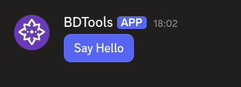
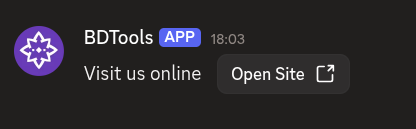

Back to Home
$addButtonCV2
$addButtonCV2 adds a button to an action row or section. Buttons can be interactive (with a custom ID) or link-style (with a URL).
Syntax
$addButtonCV2[Button ID/URL;Label;Style;Disabled;Emoji;Action row ID / Section ID]Button ID/URL: custom ID for interactive buttons, or a URL for link-style buttons.Label: the text shown on the button.Style: the button color. One ofprimary,secondary,success,danger, orlink. Uselinkfor URL buttons. Defaults to primary.Disabled: set totrueto make the button unclickable. Defaults to false.Emoji: an emoji to show on the button. Can be left empty.Action row ID / Section ID: ID of the action row or section to attach this button to.
What happens
$addButtonCV2creates a button with the given ID and label.- The button attaches to the specified action row or section.
- The button appears in your message. Interactive buttons respond to clicks, link buttons open URLs.
Example 1: Interactive button in an action row
$addActionRow[actions]
$addButtonCV2[helloBtn;Say Hello;primary;;;actions]
What happens:
$addActionRowcreates an action row.$addButtonCV2adds a primary-colored button to the action row.
The action row shows a clickable button labeled "Say Hello".
Example 2: Link button in a section
$addSection[links]
$addTextDisplay[Visit us online;links]
$addButtonCV2[https://example.com;Open Site;link;;;links]
What happens:
$addSectioncreates a section.$addTextDisplayadds text to the section.$addButtonCV2adds a link button as the section's accessory.
The section shows text with a link button beside it.
Common uses
- Adding interactive buttons that trigger commands when clicked
- Adding link buttons that open external URLs
- Providing multiple actions in a row using several buttons
See also
- $addActionRow: to create an action row for the button
- $addSection: to create a section for the button